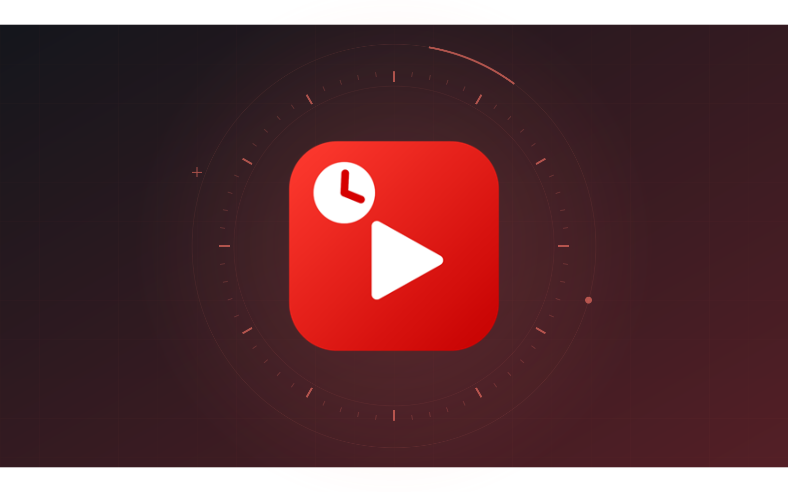

YOUTUBE TIME, ON YOUR TERMS.WINDOWS x64 · VERSION 1.3.0
TubeClock
Set a YouTube budget for each day of the week. TubeClock watches for YouTube tabs, shows a final countdown, and closes YouTube when time is up.
- Separate daily limits, parent-controlled pauses, and bonus minutes.
- PIN-protected settings, custom closing messages, and a 30-day history of when time ran out.
- Settings and usage stay on the computer. No account, cloud service, or separate .NET installation.
Install in a few steps
- Sign in to the Windows account whose YouTube time you want to limit.
- Download the ZIP and extract the entire folder.
-
Open
Install-TubeClock.cmd, review the schedule, and create a parent PIN. - Save your settings. TubeClock stays in the notification area and starts at sign-in.
No administrator access is needed. Windows may show a SmartScreen prompt because the app is not code-signed. Only run a download you trust.
Before you install
TubeClock looks for YouTube in Chrome, Edge, Firefox, Brave, Opera, Vivaldi, and Chromium. By default, a YouTube tab uses time even in the background; parent controls can change counting to the tab on screen.
At the limit, it tries to close just the YouTube tab. If that fails, it can close the browser window or end the browser process. It is a family time-limit tool, not a tamper-resistant content blocker, and embedded videos on other websites may not be detected.
To uninstall, use the tray menu and parent PIN, or the included
Uninstall-TubeClock.cmd. Uninstalling removes this Windows user’s
settings and usage.